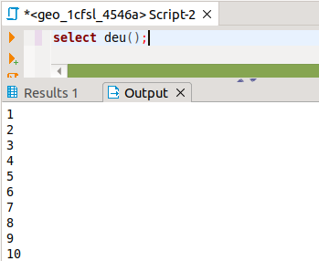

5. Funcions
En PL/pgSQL no hi ha procediments. Només hi ha funcions, encara que puguem declarar-les per a que no tornen cap valor (void).
Nota
La diferència per tant entre un procediment i una funció és que la segona torna un valor, mentre que el primer no. Però en PL/pgSQL només hi ha funcions.
La sintaxi general (i en principi per a qualsevol llenguatge) de la instrucció de creació de funcions és la següent:
instruccions' LANGUAGE llenguatge;
on el llenguatge potser un dels definits (SQL, PL/pgSQL, ...).
El cos de la funció pot anar entre cometes simples, o entre un separador que comence i acabe per $ (per exemple $cos$) i que ha de ser igual al principi i al final, com veurem en un exemple més avant.
Concretament, en el cas de PL/pgSQL, podem refinar un poc més la sintaxi
RETURNS tipus_del_valor_tornat AS '[DECLARE
declaració de variables]BEGIN
instruccionsEND;
RETURN expressió
' LANGUAGE plpgsql;
Si la funció torna un valor (i per tant l'hem declarada com a que retorna un valor), la instrucció que ens permet retornar el valor és RETURN
Per exemple, anem a crear una funció que passe de pessetes a euros. Ho podem fer sobre la Base de Dades geo_999x:
CREATE FUNCTION EUROS(n int4) RETURNS numeric AS '
BEGIN
RETURN ROUND(n/166.386,2);
END; ' LANGUAGE plpgsql;SELECT euros(1000);Els tipus de dades de tornada pot ser qualsevol, fins i tot un creat per l'usuari. I si volem que torne més d'un valor, podríem crear un tipus compost que abarque els valors que volem que torne.
Tenim la possibilitat de posar noms als paràmetres (en el cas anterior n), o no, i aleshores la manera de fer-los referència és per mig de $1 per al primer paràmetre, $2 per al segon, ... Així la mateixa funció, sense gastar nom de paràmetre quedaria:
CREATE OR REPLACE FUNCTION EUROS2(int4) RETURNS numeric AS '
BEGIN
RETURN ROUND($1/166.386,2);
END; ' LANGUAGE plpgsql;Anem a veure un altre exemple: una funció que puga convertir una latitud en format text al tipus de dades que ens vam crear en el tema 6, part 3, el tipus lat. Les instruccions estan en el punt 0 (Nota inicial)
I ara anem a fer la funció que passa de tipus Text a tipus lat:
CREATE OR REPLACE FUNCTION text_a_lat(text) RETURNS lat as $COS$
DECLARE
aux lat;
BEGIN
IF $1 IS NOT NULL THEN
aux.g := SUBSTR($1,1,STRPOS($1,'º')-1);
aux.m := SUBSTR($1, STRPOS($1,'º')+1, STRPOS($1,'''') - STRPOS($1,'º')-1);
aux.s := SUBSTR($1, STRPOS($1,'''')+1, STRPOS($1,'"') - STRPOS($1,'''')-1);
aux.h := SUBSTR($1,STRPOS($1,'"')+1);
ELSE aux := (NULL,NULL,NULL,NULL);
END IF;
RETURN aux;
END; $COS$
LANGUAGE plpgsql;Hem posat $COS$ per a delimitar el cos de la funció, per evitar problemes amb les moltes cometes que hi ha. I quan busquem la cometa, doncs en posem 4: la primera i l'última són obligatòries i delimiten la constant alfanumèrica. I al mig en posem 2 més per a marcar la cometa.
Podem provar a veure si va bé:
SELECT nom,latitud,text_a_lat(latitud),nom_c FROM POBLACIONS;Si la funció va bé, fins i tot la podríem utilitzar per omplir la taula POBLACIONS3 (està creada en el punt 0. Nota inicial), que l'havíem creada amb el tipus lat (ens convindria eliminar primer les possibles files que hi hagen creades).
DELETE FROM POBLACIONS3;INSERT INTO POBLACIONS3
SELECT nom,text_a_lat(latitud),nom_c FROM POBLACIONS;La funció inversa sembla més fàcil. L'únic problema, en tot cas, és controlar que minuts i segons sempre siguen de dues xifres. I en tot cas llevar espais en blanc que queden pel mig. I haurem d'anar amb compte amb la cometa.
Nota
En les pràctiques següents en moltes ocasions es diu "traure per pantalla". I són funcions que no tenen paràmetre ni tornen cap valor. Encara que açò no serà el normal en PostgreSQL, per a practicar pot anar bé. La manera de crear aquestes funcions és com en el següent exemple, en el qual creem una funció que trau per pantalla el número PI:
CREATE OR REPLACE FUNCTION traure_pi() RETURNS void as $COS$
begin
raise notice 'El número PI és: %',PI();
end; $COS$
LANGUAGE 'plpgsql';En aquesta ocasió hem posat moltes paraules en minúscules, per a demostrar que no importen majúscules i minúscules.
El resultat, si és que ho fem des de DBeaver, el veurem fent una altra consulta SQL posant
SELECT traure_pi();i el resultat el veuríem en la pestanya Output, ja que hem provocat traure un missatge.
Com veieu estem utilitzant la sentència RAISE NOTICE, que la veurem millor en la pregunta 7 d'aquest tema, però que ja podem avançar que el que fa és traure una línia en la pestanya de missatges amb el començament NOTICE:. Posarem entre cometes simples el text que volem mostrar, i per a traure el contingut d'una variable, posarem entre les cometes un %, i al final, separat per coma la variable de la qual volem mostrar el contingut. Podem posar més d'un %, i al final haurem de posar (separades per comes) tantes variables o expressions com % hem posat entre cometes. Ho veurem millor en els següents exemples.
Un altre exemple, també d'una funció que no torna res, sinó que "trau per pantalla" els números del 1 al 10:
CREATE OR REPLACE FUNCTION deu() RETURNS VOID as $COS$
BEGIN
FOR i IN 1..10 LOOP
RAISE NOTICE '%',i;
END LOOP;
END; $COS$
LANGUAGE 'plpgsql';Quan l'executem:
SELECT deu();Ens eixirà aquest resultat en la pestanya de Output:

Una variant seria traure els números del1 al 10 i el seu doble. Observeu com posem 2 vegades %, i després posem 2 coses a mostrar, separades per comes: i , i*2
CREATE OR REPLACE FUNCTION deu_doble() RETURNS VOID as $COS$
BEGIN
FOR i IN 1..10 LOOP
RAISE NOTICE 'Número: %. Doble: %',i,i*2;
END LOOP;
END; $COS$
LANGUAGE 'plpgsql';SELECT deu_doble();Llicenciat sota la Llicència Creative Commons Reconeixement NoComercial CompartirIgual 3.0